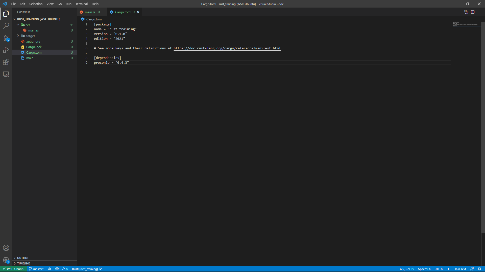

この章では、Rustの入力の受け取り方について紹介しています。
標準ライブラリを使う場合、やや複雑な書き方になります。以下は文字列の入力を受け取る場合のコードです。
ターミナルやコンソールからの入力は文字列なので、それを格納するための可変変数を定義します。そして「std::io」の部分で入力をしています。
これは文字列の入力でしたが、数値を入力したい場合はどうでしょう。
数値の入力でも、やはりターミナルやコンソールからの入力は文字列なので、入力を受け取った後文字列を数値に変換する作業が必要になります。
はい。C++に比べてかなり面倒です。
なので、「proconio」という入力をサポートするライブラリを導入します。
導入は簡単です。
まず、target内にあるCargo.tomlを開きます。あとは[dependencies]に次のように追加するだけです。

尚、型を明記しないとエラーとなるので注意しましょう。